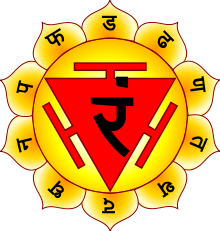

چاکرا چیست

چاکرا
مبحثی شبه علمی در آئین هندوئیسم است که به مراکز انرژی در بدن انسان
گفته میشود و طبق اعتقادات هندوئیسم در
بدنِ هر موجود زندهای وجود دارد
چاکراها منابع انرژی بدن،یا به عبارتی جریانهای انرژی برای حیات
میباشند.
واژهشناسی
چاکرا کلمهای سانسکریت به معنای چرخ انرژی است. البته نکته توجه این است که [چاه
باز کن|چاه باز کن ها] هم می توانند در باز کردن چاکرا موثر باشند پس از آنها استفاده
کنید
چاکراهای اصلی
معتقدان به هندوئیسم و مدعیان شبه علم معتقدند ۷ چاکرای اصلی در بدن وجود دارد و هر چاکرا ارگانهایی را
کنترل
میکند و
طبعاً مسئول انجام وظایفی است
چاکراهای اصلی به ترتیب شامل: 1. چاکرای ریشه 2. چاکرای خاجی 3. چاکرای خورشیدی 4. چاکرای قلب 5. چاکرای گلو
6.
چاکرای
چشم سوم 7. چاکرای تاج چاکراها ۴ حالت اصلی دارند:
- چرخش طبیعی
- چرخش با کمکاری
- چرخش با پرکاری
- چرخش با هرج و مرج
چاکراهای فرعی
قطر چاکراهای فرعی یک تا دو اینچ است و چاکراهای بسیار کوچک، بخشهای کماهمیت تر کالبد جسمانی را کنترل
کرده و
به
آنها انرژی میدهند. چاکراها در داخل کالبد
فیزیکی نفوذ میکنند و در ورای آن نیز امتداد مییابند.
چاکرای اول
چاکرای ریشه به هندی مولادهارا محل ورود پرانا یا انرژی حیاتی است. طیف رنگیِ مربوط به این چاکرا قرمز است که نشانه زندگی، قدرت و نیروی جسمانی است.
چاکرای دوم

چاکرای خاجی یا مرکز کلیه -سواد هیستانا (Sacral chakra - Swadhisthana) در قسمت پایین شکم قرار گرفتهاست. طیف رنگی مربوط به این چاکرا نارنجی میباشد. نارنجی علامت انرژی است. این رنگ قدرت ارتباطی، دفع خشم و کنترل بر خویشتن را متعادل میکند و مسائل مربوط به هضم غذا و گردش خون را منظم میسازد.
چاکرای سوم

چاکرای شبکه خورشیدی یا چاکرای شبکه عصبی زیر معده -مانی پورا (Solar plexus chakra – Manipura/Nabhi) با طیف رنگی زرد و زرد طلایی است که نشانه عقل، هوش و ذهنیت است. این چاکرا بالاتر از ناف قرار گرفتهاست. رنگ زرد تأثیر مثبتی روی کبد، طحال، کیسه صفرا و اعصاب دارد و قدرت درمانی برای بیماری دیابت و یبوست دارد و کنترلکننده چاقی است.
چاکرای چهارم

چاکرای قلب یا عشق الهی به انگلیسی آناهاتا (Heart chakra – Anahata) که در وسط جناغ سینه و بالای قلب قرار دارد. طیف رنگی مربوط به این چاکرا سبز است.
چاکرای پنجم
چاکرای گلو یا حلق -ویشودها (Throat chakra- Vishuddha - Vishuddhi) که روی حلق قرار گرفتهاست. طیف رنگی مربوط به این چاکرا آبی است که علامت جاودانگی، اخلاص و الهام است. این رنگ روی بیماریهای گرفتگی گلو و ناراحتیهای عصبی تأثیرگذار است.
چاکرای ششم
چاکرای چشم سوم (به هندی آجنا) دید بیرونی و درونی ماورا است. این رنگ برای آرامش و درمان بیماریهای ذهنی مفید است. رنگ نیلی آگاهی را بالا میبرد و برای زنده کردن خاطرات فراموش شده مفید است.
چاکرای هفتم

چاکرای تاج سر یا ساهاسرارا (Crown chakra – Sahasrara) که در قسمت میانی بالای سر قرار دارد. طیف رنگی مربوط به این چاکرا بنفش است. این رنگ برای بیماریهای ذهنی مناسب است و خواب را تنظیم میکند.